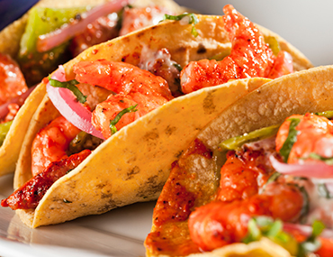

Welcome to Recetas de mariscos
Mariscos al ajillo | Laylita.com – Recetas de Cocina
2021.06.23 22:05Ir a navegación principal Ir al contenido principal Ir a la barra lateral primaria Ir al pie de página Inicio English version Recetas con Videos Indice Recetas Ecuatorianas Sopas Ecuatorianas Platos Fuertes Ecuatorianos Desayunos Ecuatorianos Comida Callejera Ecuatoriana Ceviches Empanadas ¿Quién es Laylita? Sitios Recettes de Laylita Receitas da Laylita Travel Viajes
Nav Social Menu
Inicio » Todas las recetas » Por ingrediente » Mariscos » Mariscos al ajilloMariscos al ajillo
Por Layla Pujol 3 comentarios
Esta es mi receta sencilla y rápida para preparar mariscos al ajillo. Esta receta lleva una combinación de camarones, calamar, y conchitas – y los mariscos adicionales de su preferencia. Se cocinan en una salsa con mantequilla, ajo, cebolla blanca, vino blanco, y crema de leche. Al final se agrega perejil picado para darle un toque de frescura.
English version
Ir a la RecetaEstos mariscos al ajillo se pueden servir como una entrada o aperitivo. Son deliciosos acompañados de rodajas de pan baguette o un pan rustico. El pan es perfecto para absorber la salsa en que cocieron los mariscos. Otra opción es servirlos como plato principal con arroz, platanitos verdes fritos (o unos patacones/tostones), una ensaladita. También se puede usar como salsa para pastas o espaguetis al ajillo. Para una ocasión especial se pueden servir encima de pescado asado .
Yo use solamente tres mariscos: camarones, calamares y conchitas de abanico pequeñas (también llamadas vieiras). Otras ideas de marisco que se pueden usar incluyen mejillones, almejas, cangrejo y/o pulpo. El cangrejo y el pulpo los recomiendo agregarlos ya cocidos y al final para mezclarlos con el resto – porque el tiempo de cocción es muy rápido para el resto de los mariscos.
Recomiendo tener todos los ingredientes limpios y preparados de antemano, al igual que las guarniciones. De esta forma se tomará muy poco tiempo en preparar los mariscos al ajillo y los podrá disfrutar inmediatamente.
Mariscos al ajillo
Receta sencilla y rápida para preparar mariscos al ajillo, una exquisita combinación de camarones, calamar, y conchitas en una salsa de mantequilla, ajo, vino blanco y crema de leche. 4.91 de 10 votos Imprimir Pin Preguntas o comentarios Plato: Aperitivo, Entrada, Plato principal Cocina: Ecuatoriana, Española, Fusión, Internacional, Latina Keyword: Al ajillo, Calamar, Camarones, Conchitas de abanico, Fácil, Mariscos al ajillo, Perejil, Rápido, Vino blanco Tiempo de preparación: 15 minutos Tiempo de cocción: 10 minutos Tiempo total: 25 minutos Rinde: 4 porciones como entrada y para 2 como plato principalIngredientes
½ libra de camarones crudos pelados y desvenados ½ libra de calamares cortados en rodajas ½ libra de vieiras o conchitas de abanico pequeñas 2 cucharadas de mantequilla 2 cucharadas de cebolla blanca picada finamente 6 dientes de ajo machacados o picaditos ¼ taza de vino blanco ½ taza de crema de leche Sal y pimienta al gusto Perejil picaditoIdeas para servir:
Patacones/tostones o plátanos verdes fritos Arroz Ensalada PanPreparación
Sazonar los mariscos con un poco de sal. Derrita la mantequilla a temperatura media en un sartén de buen tamaño. Añada la cebolla y el ajo, cocine por unos dos minutos. Añada los camarones y cocine por 1 minuto. Añada el vino blanco, mezcle bien y cocine a fuego alto durante 1 minuto. Añada la crema de leche y cocine hasta que los camarones estén casi listos. Añada el calamar y las vieiras o conchitas de abanico, cocine por aproximadamente dos minutos o hasta que estén listos, y retire del fuego. Ajuste la sal y r agregue pimienta al gusto. Agregue el perejil picado. Sirva los mariscos al ajillo inmediatamente. Se puede servir como aperitivo o entrada acompañado de pan de ajo. También se puede servir como plato principal con arroz, plátanos verdes fritos, ensalada, etc.Fotos paso a paso para preparar mariscos al ajillo:
Haz clic para compartir en Facebook (Se abre en una ventana nueva) Haz clic para compartir en Pinterest (Se abre en una ventana nueva) Haz clic para compartir en Twitter (Se abre en una ventana nueva) Haz clic para compartir en WhatsApp (Se abre en una ventana nueva) Haz clic para enviar por correo electrónico a un amigo (Se abre en una ventana nueva)Relacionado
Archivado en: Calamar , Camarón , Comida reconfortante , Conchas , Ecuador , Entradas y Aperitivos , España , Latino/Hispano , Mariscos , Para fiestas , Plato principal , Sin carne , Sudamerica
Interacciones con los lectores
Comentarios
Jessica Muñoz dice
noviembre 19, 2020 en 1:37 pm
Se ve exquisito muchas felicidades
ResponderRosa Morales M dice
noviembre 19, 2020 en 1:25 pm
Muchas gracias Laylita por compartir esta nueva receta, fácil y deliciosa.
ResponderRODOLFO MONTERO dice
noviembre 19, 2020 en 10:16 am
excelente muy delicioso la felicito
ResponderComentarios? Preguntas? Cancelar respuesta
Barra lateral primaria
Suscríbase
Bienvenido
Mi nombre es Layla Pujol, también conocida como Laylita, y soy ecuatoriana, aunque actualmente vivo en Seattle, WA. Muchas de mis recetas son inspiradas por la comida ecuatoriana, por la cocina americana-mexicana de mi mama, quien creció en Nuevo México, y también por la cocina de mi abuelita en Texas. MásMi libro de cocina ¡Cómpralo ahora!
Recetas por categoría
Acompañantes (49) Aderezos (28) Andes (24) Año Nuevo (34) Bebidas (45) Bocaditos y snacks (51) Básicas (37) Caribe (20) Carne (39) Comida reconfortante (43) Condimentos (24) Cócteles y tragos (28) Desayuno (45) Día de Acción de Gracias o Thanksgiving (27) Día de los Enamorados (37) Ecuador (133) Empanadas (21) Ensaladas (33) Entradas y Aperitivos (74) Europa (67) Frutas (78) Fáciles (171) Latino/Hispano (267) Mariscos (33) Mexico y Centroamerica (66) Navidad y Nochebuena (41) Norteamerica (64) Para fiestas (147) Para niños (94) Pescado (22) Plato principal (78) Postres (64) Queso (23) Recetas con aguacate o palta (35) Recetas con Videos (33) Recetas para el Día de la Madre (51) Recetas para la Cuaresma (54) Salsas (41) Sin carne (90) Sudamerica (223) Todas las recetas (112) Tradiciones (39) Vegetariana (163) Venezuela (25) Verduras (34)Comida Ecuatoriana
Pan de yuca
El pan de yuca se conoce también como pan de queso en Colombia o pao de queijo en Brasil, se prepara con almidón o harina …Como preparar la masa para empanadas de horno
Receta fácil para preparar la masa para empanadas de horno. Esta receta de masa casera de empanadas incluye videos y fotos paso a paso.Humitas
Receta para preparar humitas ecuatorianas con choclo o maíz fresco (elote), queso, huevos, mantequilla, crema de leche, y azúcar.Footer
Síguenos!
@RecetasdeLaylita en Instagram
{Shakshuka} Huevos en una salsa de tomate, pimiento, cebolla – mi versión tiene un toque latino y también lleva chorizo, lo serví con aguacate, jalapeños y quesito fresco Picadillo de chorizo y plátano maduro {macho} – lo serví con huevos fritos, queso fresco, aguacate, y ají o salsa picante. Garbanzos con chorizo y chimichurri + huevos fritos Sangría de melón 🍉🍈🍉 Refresco de mango y limón 🥭🍋🥭 Limonada de fresa {Fresada} Inicio ¿Quién es Laylita? In English En Français Em Português
© Laylita.com 2021. Todos los derechos reservados. Prohibida su reproducción sin autorización. Política de privacidad | Contacto
Cargando comentarios Comentario ×
